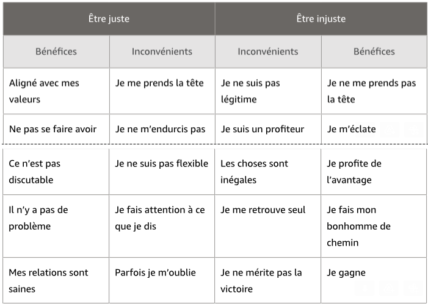
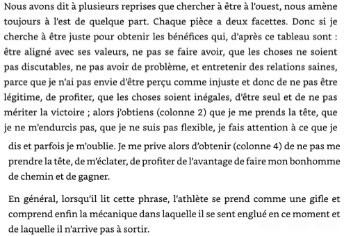
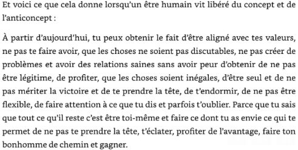

PRÉPARATION MENTALE GAGNANTE
Pierre David, 2023
Résumé
- Est-ce que les personnes égoïstes t'agacent ?
- Est-ce que les personnes arrogantes t'agacent ?
- Est-ce que les personnes méchantes ou malhonnêtes t'agacent ?
- Est-ce que tu as peur d'échouer ?
Produit Honte Peur Culpabilité Impuissance devant ces blocages
Dépolarisation classique
- Identifiez l'individu que vous jugez
- Identifiez le concept que vous jugez "mal" chez les autres
- Déconceptualisez
- Trouvez au minimum 10 moments dans lesquels vous vous êtes perçu ou quelqu'un d'autre vous a perçu exprimer ce trait de caractère
- Trouvez 30 bénéfices pour les autres à avoir exprimé ce trait de caractère
- Trouvez une 10aine d'inconvénients pour les autres si vous aviez exprimé le trait de caractère inverse
- Trouvez 30 bénéfices pour vous à ce que l'autre exprime ce trait de caractère
- Trouvez une 10aine d'inconvénients pour vous si l'autre avait exprimé le trait de caractère inverse
- Il reste de la gratitude à ce que l'autre soit ainsi et une autorisation intérieure à exprimer le même trait de caractère
La dépolarisation classique permet de s'affranchir des dogmes moraux qi empêchent d'exprimer son plein potentiel.
La dépolarisation inversée permet de reprendre le pouvoir en arrêtant de se minimiser par rapport à un objectif, un concurrent ou un partenaire, et en découvrant sa propre unicité pour en faire une force.
Dépolarisation inversée
- Identifiez l'individu que vous admirez ou que vous positionnez en posture d'autorité.
- Identifiez le concept que vous jugez bien chez l'autre. Ou ce que vous percevez qu'il a de plus que vous.
- Déconceptualisez.
- Identifiez au minimum 10 moments lors desquels vous ou quelqu'un d'autre vous a vu exprimer ce trait de caractère.
- Trouvez 30 inconvénients pour vous d'avoir exprimé ce trait de caractère.
- Trouvez une dizaine de bénéfices pour vous si vous aviez exprimé le trait de caractère inverse
- Trouvez 30 inconvénients pour vous à ce que l'autre exprime ce trait de caractère
- Identifiez quelques moments quand l'autre exprime le trait de caractère inverse
- Trouvez une dizaine de bénéfices pour vous à ce que l'autre exprime le trait de caractère inverse
- Une autorisation apparait : la vôtre. Vous aussi, vous pouvez le faire.
La zone de performance se trouve entre la peur et l'envie.
Dépolarisation d'une peur
- Identifiez votre peur
- Projetez-vous de manière factuelle : au pire du pire du pire, si l'évènement dont vous avez peur survient, que se passerait-il ?
- Quels seraient les bénéfices à long terme si cet évènement se produisait ?
- Quels seraient les inconvénients si finalement l'évènement dont vous avez peur ne se produit pas ?
- Alors, il reste la juste pression : certitude et incertitude s'équilibrent
- Technique avancée : il n'y a pas de peur du futur sans référentiel passé
- Identifiez la peur
- Allez voir de manière factuelle : au pire du pire du pire, si l'évènement dont vous avez peur se produit, que se passe-t-il factuellement ?
- Trouvez la résonance passé (les fois où l'évènement appréhendé s'est réalisé dans le passé)
- Trouvez 30 bénéfices d'avoir vécu cet évènement
- Trouvez une dizaine d'inconvénients si cet évènement ne s'était pas produit
- Revenez à la peur du futur et évaluez votre niveau de peur
- Reprenez le premier exercice : cela devrait être rapide
Sortir de la dualité
Exemple

Mécanisme :

A partir d'aujourd'hui :

- Identifier le concept valorisé
- Identifier l'anti-concept
- Remplir le tableau avec 4 colonnes
- Lire la première séquence de phrases qui met en exergue le mécanisme
- Choisir un concept complémentaire si le concept et l'anticoncept n'existaient pas dans vos perceptions (vous avez le droit de dire "vous-mêmes")
- Lire la séquence "à partir d'aujourd'hui"
- Bonus : partez sur des dépolarisations classiques sur l'anticoncept et la colonne 3 et des dépolarisations inversées sur le concept et la colonne 1
Le prix à payer
Identifiez votre rêve
Notez cinquante inconvénients de ce rêve pour le reste de votre vie
Notez cinquante bénéfices si ce rêve ne se réalise pas, pour le reste de votre vie
Le rêve tombe de son piédestal : soit vous renoncez, car ce n'est pas aligné avec votre système de priorités intrinsèques, soit il ne reste que la certitude que c'est déjà fait
Vous êtes présent à lui. Vous avez l'identité, l'objectif n'a plus qu'à arriver. Vous ressentez le paradoxe : c'est déjà fait et en même temps, je ne sais pas ce qu'il peut arriver.
Réflexions sur le livre (préciser la date)
2024-01 : Constituendi
Liens vers d'autres livres - Notions
Retour à l'accueil des fiches de lecture
Retour à l'accueil général